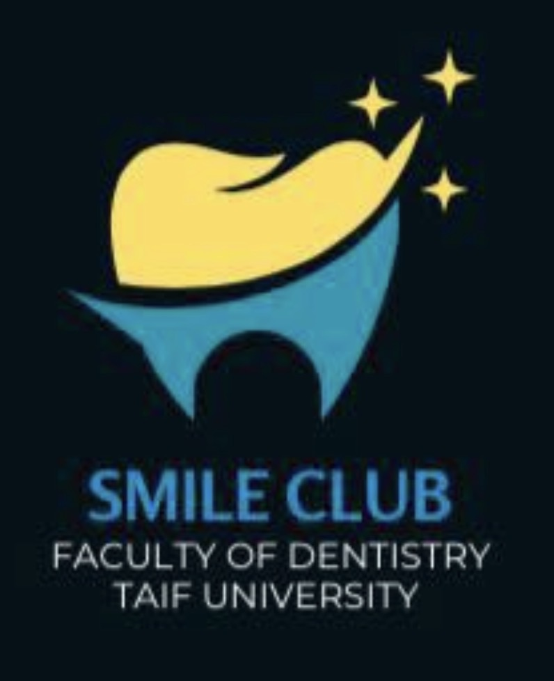

صحة فمك
جزء من صحة سكّرك.
هل تعلم أن السكري وصحة اللثة يؤثر كلٌ منهما في الآخر؟ اكتشف الرابط، تعرّف على العادات الوقائية، واختبر معلوماتك في تجربة تفاعلية مصممة لك.

جامعة الطائف · كلية طب الأسنان · نادي الابتسامة
ما العلاقة بين السكري وصحة الفم؟
ارتفاع سكر الدم، خصوصًا عند عدم ضبطه، قد يزيد احتمالية بعض مشكلات الفم. اختر بطاقة لتعرف المزيد.
السكري وأمراض اللثة
قد يزيد عدم ضبط سكر الدم احتمالية التهاب اللثة وأمراض دواعم الأسنان. كما أن التهاب اللثة الشديد قد يجعل التحكم في مستوى السكر أكثر صعوبة.
اهتم بالتنظيف اليومي، والمتابعة الدورية لدى طبيب الأسنان، وضبط سكر الدم وفق خطة فريقك الطبي.
خطوات بسيطة. أثر كبير.
اضغط على كل عادة لتضيفها إلى قائمة عنايتك اليومية.
كل عادة مهمة
ابدأ باختيار عادة واحدة يمكنك الالتزام بها.
تحدي الابتسامة الواعية
خمسة أسئلة قصيرة، مع تفسير علمي لكل إجابة. هل أنت مستعد؟
صحّح المعلومة
اختر «صح» أو «خطأ» لتكتشف الإجابة.
وثّق مشاركتك
أدخل اسمك لإنشاء بطاقة مشاركة تذكارية. هذه البطاقة ليست شهادة معتمدة من الجامعة.
بطاقة مشاركة توعوية
تقديرًا للاهتمام بالتوعية حول السكري وصحة الفم
اسم المشاركالمصادر الطبية
للمزيد من المعلومات الموثوقة، يمكنك الرجوع إلى المصادر التالية:
هذا الموقع للتثقيف الصحي العام، ولا يُعد تشخيصًا أو بديلًا عن استشارة الطبيب أو طبيب الأسنان.